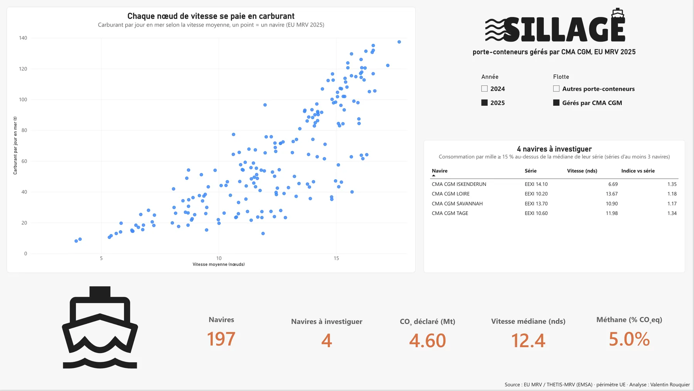

MARITIME · EU MRVSHIPPING · EU MRV
SILLAGE
Que disent les déclarations d'émissions européennes de la flotte de porte-conteneurs CMA CGM ? What do EU emissions reports reveal about the CMA CGM container fleet?
- 197navires gérés par le groupe en 2025, comparés à plus de 2 100 porte-conteneursgroup-managed ships in 2025, benchmarked against more than 2,100 container ships
- −1,2 ndknde vitesse médiane en un an sur 148 navires suivis, pour −2,6 % de carburant par millemedian speed in one year across 148 tracked ships, with 2.6% less fuel per nautical mile
- 4navires consomment au moins 15 % de plus que leurs sister-ships : à investiguerships burn at least 15% more than their sister ships: flagged for review
Python, BigQuery, dbt, Power BI (DAX, Microsoft Fabric), 11 tests dbt(DAX, Microsoft Fabric), 11 dbt tests
Analyse indépendante de données publiques, sans lien avec CMA CGM.Independent analysis of public data, not affiliated with CMA CGM.